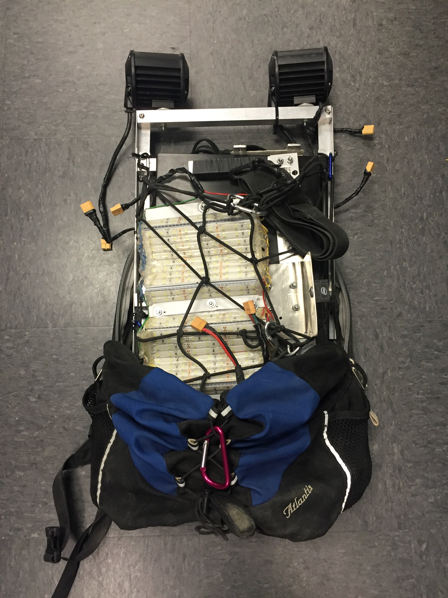
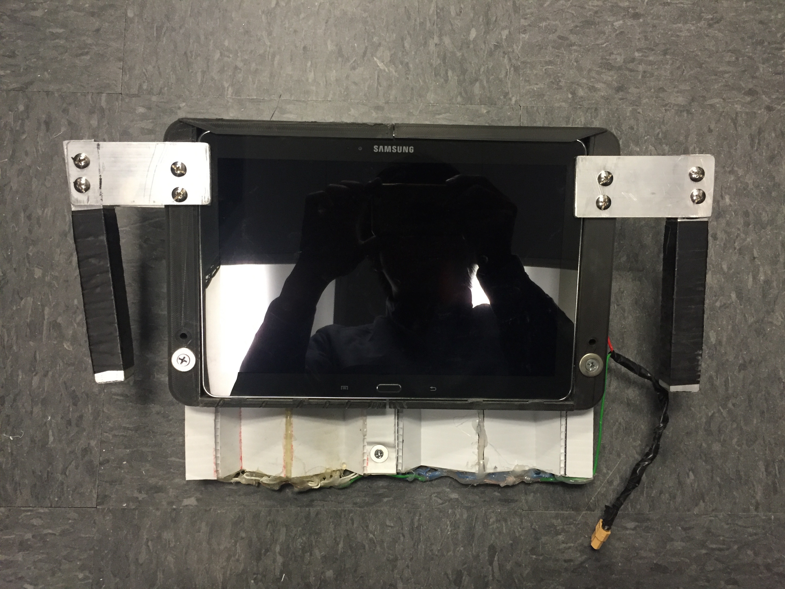
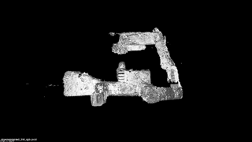

Joined this E4E project in Spring 2017 during Prof.Kastner's CSE237D. Continued working on it throughout the following summer break.
Works
- developed a protable backpack system for archeologist to get 3D scans of ancient Maya temples
- Researched on existing SLAM algorithms
- Write ROS launch files for all the RGBD cameras we have to make them work with all the SLAM algorithms we have
- Wrote scripts for ORBSLAM2 to get 3D models based on the key trajectory file it saves
- Regenerated models from the recorded ROS bag files
- Compared the obtained models to ground truth lidar models using ICP
Backpack and Tablet
The backpack system we built

The handheld part

SLAM Algorithms
The SLAM algorithms we used are listed below
Data Collection
Video Here.
Results
A model generated by our scripts based on the output of ORBSLAM2 is shown below.

The ground truth lidar model is also shown here as a comparison.
For more detailed results, you may refer to our Github repository.
Related Readings
Back